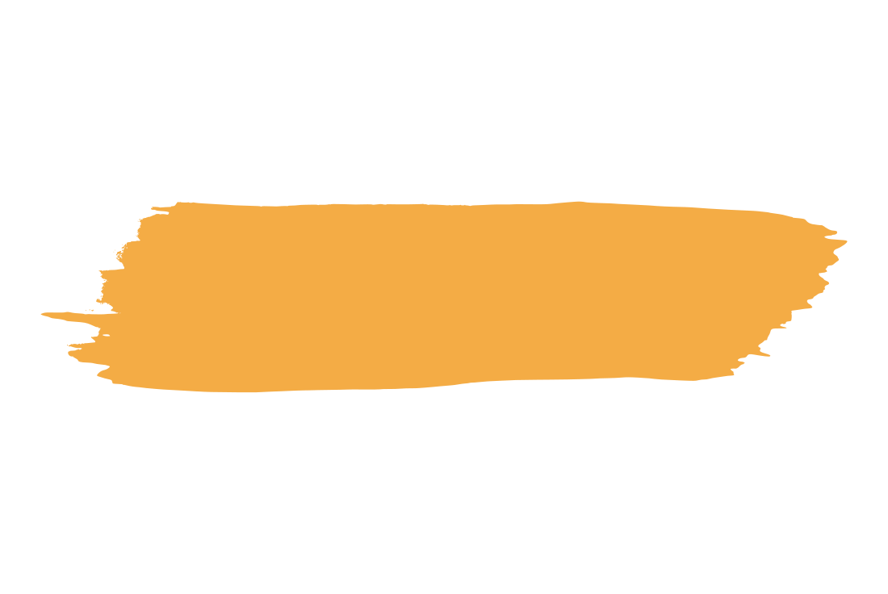

<div class="about-layout flex-column" *transloco="let t">
    <div>
        
        <div class="title-container">
            <h2 data-aos="fade-up" class="subtitle"> {{ t('mainPage.about.subtitle').toUpperCase() }} </h2>
            <h1 data-aos="fade-up" data-aos-delay="400" class="text-animation-container flex-row">    
                <span class="title"> {{ t('mainPage.about.title') }} </span> 
                <div> 
                    <ul class="flip-animation"> 
                        <li> {{ t('mainPage.about.content.list.professional.title') }} </li>
                        <li> {{ t('mainPage.about.content.list.enthusiastic.title') }} </li>
                        <li> {{ t('mainPage.about.content.list.passionate.title') }} </li>
                    </ul>
                </div>
            </h1>
            <div class="brush-image-container">
                
            </div>
        </div>
        
        <div class="content-container" data-aos="fade-up" data-aos-delay="800">

            <p> <span> {{ t('mainPage.about.content.firstParagraph') }} </span> </p>
            <p> <span> {{ t('mainPage.about.content.secondParagraph') }} </span> </p>

            

            <div class="social-media-container flex-row">

                <span class="title"> {{ t('mainPage.about.content.thirdParagraph') }} </span>
                
                <div class="buttons-container flex-row">

                    <button mat-icon-button aria-label="Instagram" class="zoom" (click)="openNewTab('Instagram')">
                        <fa-icon [icon]="faInstagram"></fa-icon>
                    </button>
        
                    <button mat-icon-button aria-label="Facebook" class="zoom" (click)="openNewTab('Facebook')">
                        <fa-icon [icon]="faFacebook"></fa-icon>
                    </button>
        
                    <button mat-icon-button aria-label="Twitter" class="zoom" (click)="openNewTab('Twitter')">
                        <fa-icon [icon]="faTwitter"></fa-icon>
                    </button>
        
                    <button mat-icon-button aria-label="Youtube" [disabled]="true" (click)="openNewTab('Youtube')">
                        <fa-icon [icon]="faYoutube"></fa-icon>
                    </button>

                </div>

            </div>


        </div>

    </div>
</div>
